# Load in required libraries
library(tidyverse) #this automatically loads ggplot2
# Note: you will likely need to install the Ecdat package to load the
# data we use via:
#install.packages("Ecdat")
library(Ecdat)
library(gridExtra) # Required for using grid.arrange()10 Tennessee Star Handout
This handout demonstrates a step-by-step worked example of creating a publication-ready plot, along with improvements and stylistic enhancements. Additionally, you will find detailed explanations and use cases for several useful functions, such as grid.arrange(), annotate(), and geom_text(), to help you refine your visualizations effectively.
10.1 Re-creating the Tennessee STAR Boxplot
This handout provides the solution to the in-class plotting exercise where we recreated a plot o the Tennesse Star dataset. In this handout we start with a simple boxplot and work our way up to the final visualization. When then look at some extensions.
In our target plot, we want to visualize reading test scores (treadssk) by the type of classroom randomly assigned (classk) along with variables showing whether the student was eligible for free or reduced price lunch in kindergarten (freelunk) and race (race). The plot we are trying to mimic looks like this:
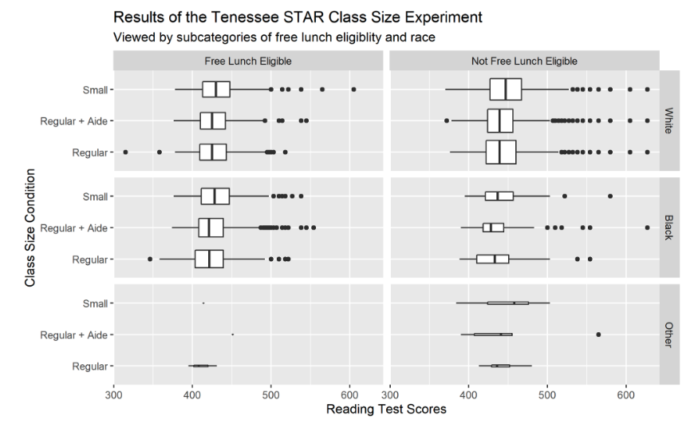
It’s useful to start small, and then build up iteratively to more complex plots. Start with a simple geom_boxplot of test scores, and then gradually make it more complex to try and emulate the original. Some manipulations are easier done in the ggplot itself, whereas other things might be easier if you manipulate the data before you give it to ggplot.
Let’s start by a single boxplot that separate students only by class sizes:
star <- Ecdat::Star
star %>%
ggplot(aes(x = classk, y = treadssk)) +
geom_boxplot(varwidth = TRUE) 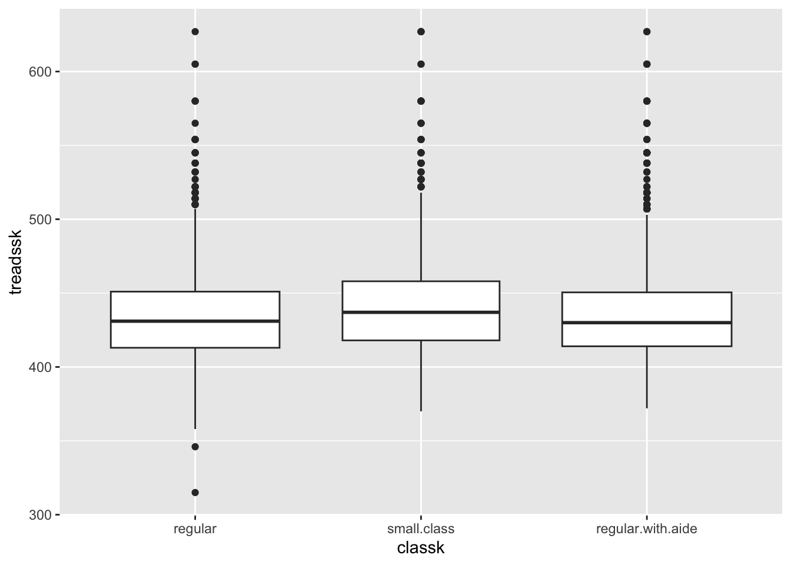
If we want to change the labels of each group, we can convert our classk to a factor. The order of the levels will determine the order of the boxes in the plot. Also, the boxes are vertical instead of horizontal, as in the example. We can fix this with coord_flip(). Here we go:
# some pre-processing to make the class sizes a proper factor
star <- mutate(star, classk = factor(classk,
levels = c("small.class",
"regular.with.aide",
"regular"),
labels = c("Small",
"Regular with aide",
"Regular")))
# build simple boxplot
star %>%
ggplot(aes(x = classk, y = treadssk)) +
# When varwidth = TRUE,
# the width of each boxplot is proportional to the
# sample size of that category.This means that categories with
# more data points will have wider boxplots, while categories with
# fewer data points** will have narrower boxplots.
# If varwidth = FALSE (default), all boxplots have the
# same width regardless of sample size.
geom_boxplot(varwidth = TRUE) +
coord_flip() # Flip axes for better readability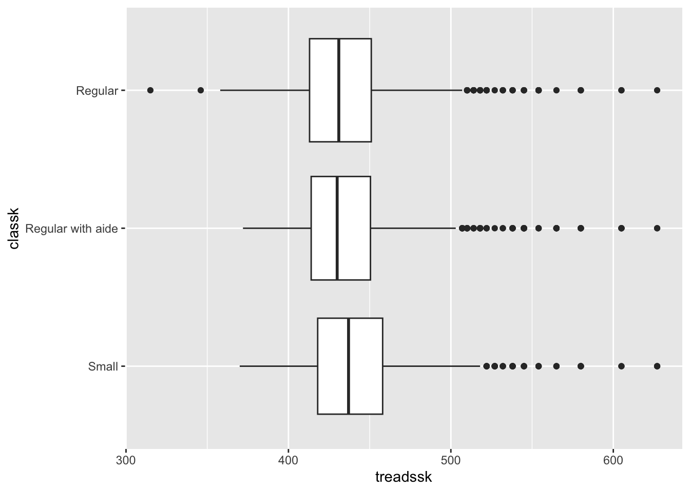
Now let’s add in just free lunch as an additional categorical variable.
# again, pre-process to make sure that free lunch is properly labeled factor
star <- mutate(star, freelunk = recode(freelunk,
no = "Not Free Lunch Eligible",
yes = "Free Lunch Eligible"))
star %>%
ggplot(aes(x = classk, y = treadssk)) +
facet_wrap( ~freelunk) +
geom_boxplot(varwidth = TRUE) +
coord_flip()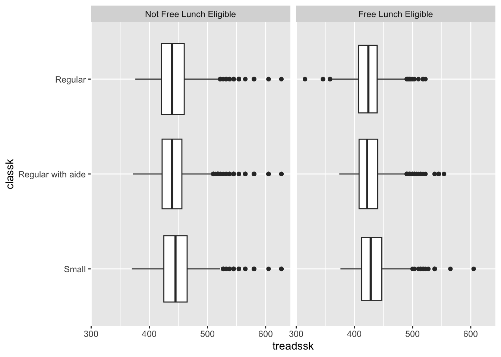
Add in race as another dimension of variability:
# making sure race is also a properly labeled factor
star <- mutate(star, race = factor(race,
levels = c("black","white",
"other"),
labels = c("Black", "White",
"Other")))
star %>%
ggplot(aes(x = classk, y = treadssk)) +
facet_wrap( race~freelunk) +
geom_boxplot(varwidth = TRUE) +
coord_flip()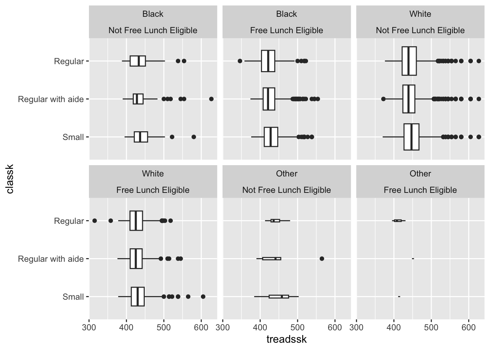
It looks almost there right now. But facet_wrap seems to create six completely separate panels. Let’s try facet_grid instead.
Side note: if our goal is simply to create a “good” plot instead of replicating an existing one, is facet_wrap or facet_grid the better choice here? Why?.
star %>%
ggplot(aes(x = classk, y = treadssk)) +
facet_grid( race~freelunk) +
geom_boxplot(varwidth = TRUE) +
coord_flip()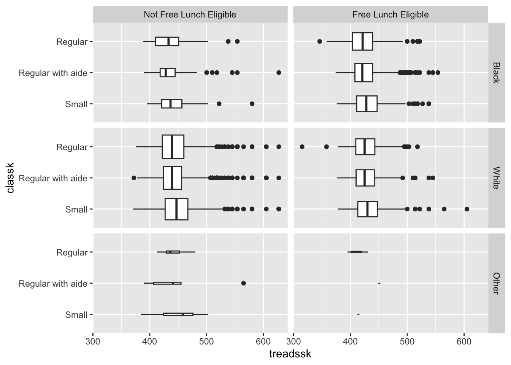
Last but not least, let’s add in titles and axes:
star %>%
ggplot(aes(x = classk, y = treadssk)) +
facet_grid( race~freelunk) +
geom_boxplot(varwidth = TRUE) +
coord_flip() +
labs(title = "Results of the Tennessee STAR Class Size Experiment",
subtitle = "Viewed by subcategories of free lunch eligibility and race",
y = "Reading Test Scores",
x = "Class Size Condition")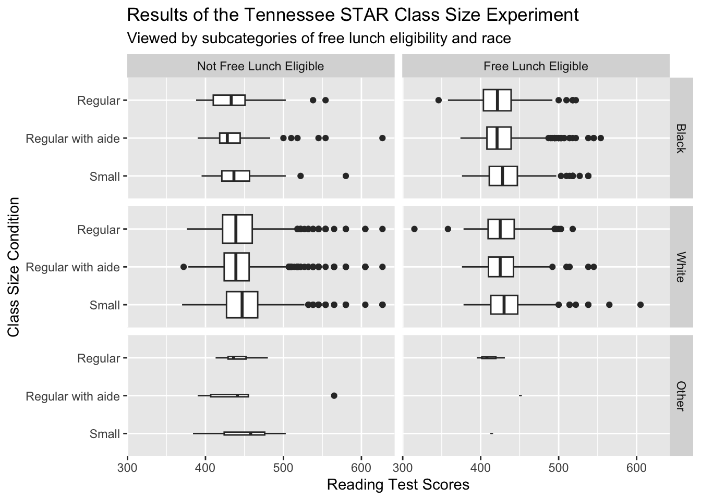
In this iterative process, we managed to build a clean (i.e., not much chart junk) and accessible (e.g., relatively low cognitive load to process, friendly to people with color vision deficiencies) plot to represent the data. Viewers are able to see that (visually, as we haven’t done any statistical tests yet) class size appears to impact reading test scores differently for students with different races and family incomes.
10.1.1 (Optional) Recreating the boxplot without manipulating the original dataset
We can label things on the fly rather than making the factors in our dataset different, like so:
# Loading the Tennessee Star dataset in a new data frame
star_new <- Ecdat::Star
# The ggplot code below shows us how we can modify the facet labels
# without manipulating the dataset. We pass the new dataset star_new
# to ggplot, and use the labeller function inside facet_grid to rename
# facet labels. In the .cols argument, we specify the data label we want
# to see in the plot, and set it equal to the value the label corresponds to.
ggplot(data=star_new, aes(x=treadssk, y=classk)) +
geom_boxplot() +
facet_grid(race~freelunk,
# the facet columns correspond to the freelunk variable
# here, we say where you see "yes", label it "Free lunch eligible"
# Similarly, we label the remaining facet columns and rows
labeller = labeller(.cols = c("yes" = "Free lunch eligible",
"no"="Not Free Lunch Eligble"),
.rows = c("white" = "White",
"black" = "Black",
"other" = "Other"))) +
labs(x = "Reading Test Scores",
y = "Class Size Condition",
title = "Results of the Tenessee STAR Class Size Experiment",
subtitle = "Viewed by subcategories of free lunch eligibility and race") + # we use the theme function below to modify the axis text in the y axis
# to be tilted at a 45-degree angle for a cleaner look
theme(axis.text.y = element_text(angle = 45))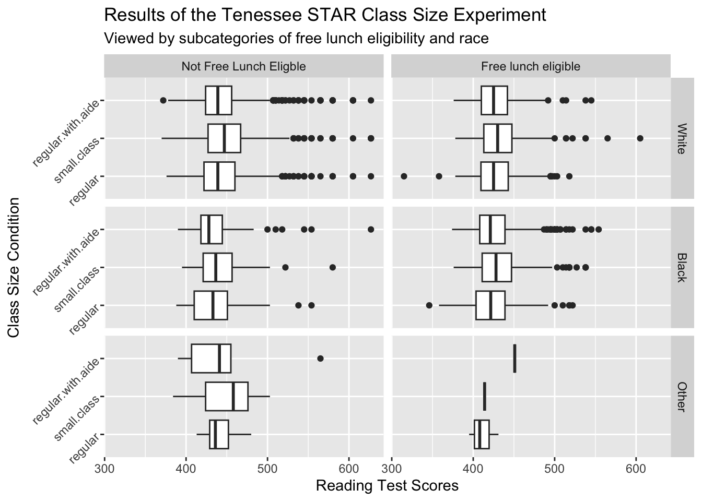
Which you do is a matter of coding taste, for the most part.
10.2 Bundling plots with grid.arrange()
If we want to place two completely separate plots side by side without faceting, we can use the grid.arrange() function. grid.arrange() allows you to arrange multiple ggplot2 plots in a grid layout. This is useful when you want to display multiple visualizations side by side in a single output.
How is grid.arrange() different from faceting?
- grid.arrange() is used to arrange completely separate ggplot objects together in a grid
- Each plot can have different aesthetics, geoms, themes, or datasets
- Faceting (
facet_wrap()orfacet_grid()) is used within a single ggplot object to split data into multiple subplots based on a categorical variable - Faceting is ideal when all plots share the same x/y variables, while grid.arrange() is better for combining independent plots that may have different structures
The code chunk below demonstrates use of this function.
# Let's go back to the Tennessee Star dataset,
# and create two boxplots, one between reading test scores
# and free lunch eligibility, and the second between
# reading test scores and sex.
# Assign the first plot to a variable called plot_1
plot_1 <- star %>%
ggplot(aes(x=treadssk, y=freelunk)) +
geom_boxplot() +
theme_minimal() +
labs( #Adding some labels here for x-axis, y-axis and the plot title
title = " Free Lunch Eligibility vs.\n Reading Test Scores",
x = "Reading Test Scores",
y = "Free Lunch Eligibility"
)
# Assign the first plot to a different variable called plot_2
plot_2 <- star %>%
ggplot(aes(x=treadssk, y=sex)) +
geom_boxplot() +
theme_classic() +
labs( #Adding some labels here for x-axis, y-axis and the plot title
title = "Sex vs.\n Reading Test Scores",
x = "Reading Test Scores",
y = "Sex"
) + # Below, we use the scale_y_discrete function to rename labels on y-axis
# to capitalize the first letter in the label
scale_y_discrete(labels = c("boy" = "Boy", "girl" = "Girl"))
# Using grid.arrange(), we arrange plot_1 and plot_2 in a single row
# with two columns
grid.arrange(plot_1, plot_2, ncol = 2, nrow = 1)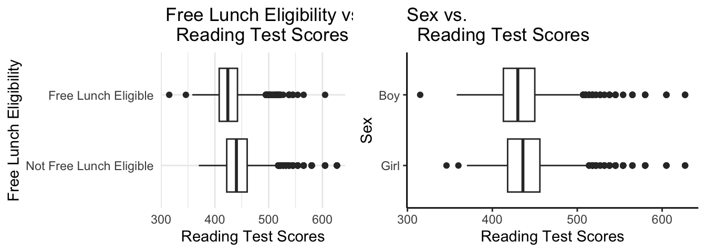
10.3 Improvements on the Tennessee STAR Boxplot
10.3.1 What if we want to add a different color for the small class sizes to hightlight the distributions in that category?
You can set colors quite easily. You may find the documentation page for scale_manual helpful. For a list of color names, this link will be handy. Here is a demonstration:
star %>%
ggplot(aes(x = classk, y = treadssk, col=classk)) +
facet_grid( race~freelunk) +
geom_boxplot(varwidth = TRUE) +
coord_flip() +
labs(title = "Results of the Tennessee STAR Class Size Experiment",
subtitle = "Viewed by subcategories of free lunch eligibility and race",
y = "Reading Test Scores",
x = "Class Size Condition") +
# The scale_color_manual function below manually sets colors for the classk variable.
# The first category (small class size) is highlighted in orange,
# while the other class size categories are set to gray.
# This helps emphasize the small class size condition in the visualization.
scale_color_manual(values=c("orange","gray", "gray")) 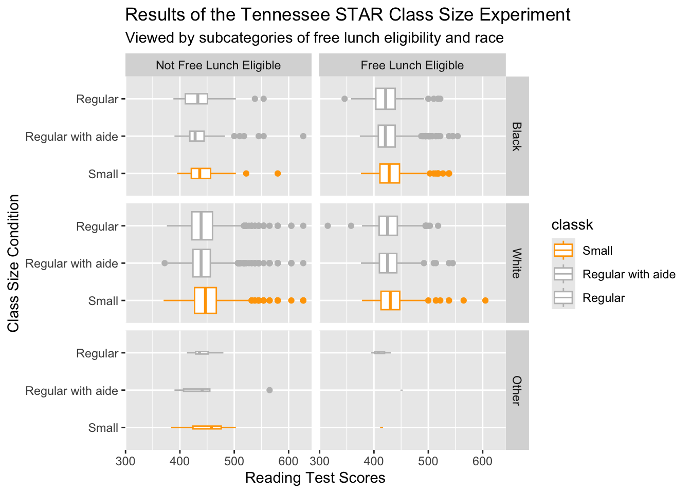
10.3.2 What if we want to annotate all the boxplots corresponding to the the small class size category?
You can also annotate your plot. You may find the documentation page for annotate helpful.
star %>%
ggplot(aes(x = classk, y = treadssk)) +
facet_grid(race~freelunk) +
geom_boxplot(varwidth = TRUE) +
coord_flip() +
labs(title = "Results of the Tennessee STAR Class Size Experiment",
subtitle = "Viewed by subcategories of free lunch eligibility and race",
y = "Reading Test Scores",
x = "Class Size Condition") +
annotate("rect", xmin = 0.65, xmax = 1.35, ymin = 300, ymax = 700,
alpha = .2, fill="red")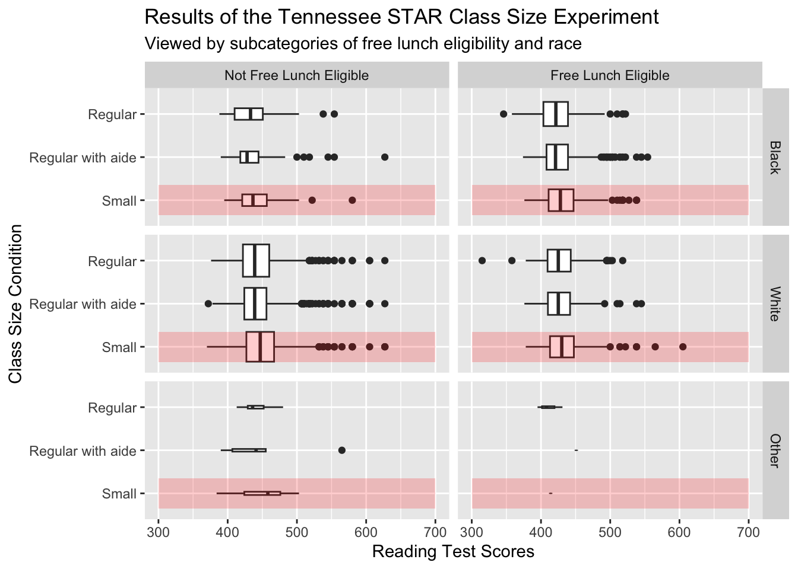
Explanation of the annotate() function
The annotate() function is used to add custom shapes or text to a ggplot. Here, “rect” (rectangle) is used to highlight a specific region in the plot.
xmin = 0.65, xmax = 1.35: classk is a factor, so ggplot assigns it numeric positions (e.g., 1 = small class, 2 = regular with aide, 3 = regular). The values 0.65 and 1.35 define the “height” of the rectangle, but because of
coord_flip(), this actually affects the y-axis instead of the x-axis.ymin = 300, ymax = 700: Defines the horizontal range of the rectangle (test scores from 300 to 700), since
coord_flip()swaps the x- and y-axes.If
coord_flip()was not used and we instead used x = treadssk, y = classk in the ggplot aesthetics, we would need to swapxminwithyminandxmaxwithymax:xmin = 300, xmax = 700(test scores would be on the x-axis) andymin = 0.65, ymax = 1.35(class size categories would be on the y-axis). This is because, withoutcoord_flip(), the x-axis stays horizontal and the y-axis stays vertical.alpha = 0.2: This controls transparency (0 = fully transparent, 1 = fully opaque). A value of 0.2 makes the rectangle semi-transparent, so the data underneath is still visible.
fill = “red”: The rectangle is filled with red, drawing attention to the selected region.
10.4 What about adding text to the annotated Tennessee Star Boxplot?
We next demonstrate adding some text to the annotated plot above. In particular we add the useful eye catching “Here!” in red.
p <- star %>%
ggplot(aes(x = classk, y = treadssk)) +
facet_grid( race~freelunk) +
geom_boxplot(varwidth = TRUE) +
coord_flip() +
labs(title = "Results of the Tennessee STAR Class Size Experiment",
subtitle = "Viewed by subcategories of free lunch eligibility and race",
y = "Reading Test Scores",
x = "Class Size Condition") +
annotate("rect", xmin = 0.65, xmax = 1.35, ymin = 300, ymax = 700,
alpha = .2, fill="red")
# ---------- Creating a Data Frame for Text Annotation ----------
text <- data.frame(
classk = 1, # To position the text at class size condition = 1 (small class)
treadssk = 600, # To position the text at treadssk = 600 (as seen in the figure)
# Below, we specify the free lunch eligibility category wherein to place the text
freelunk = factor("Free Lunch Eligible",
levels = c("Not Free Lunch Eligible","Free Lunch Eligible")),
# Below, we specify the race category wherein to place the text
race = factor("Black", levels=c("Black", "White", "Other")))
# -------------------- Adding Text Annotation to the Plot --------------------
# - `geom_text()` adds a text label to the plot using data from the `text` data frame.
# - `data = text` tells ggplot where to position the text.
# - `label = "Here!"` is the actual text that will appear on the plot.
# - `col = "red"` sets the text color to red.
# - `size = 6` controls the font size.
# - Since `coord_flip()` is used, `classk = 1` (normally an x value) now determines
# the vertical position, and `treadssk = 600` (normally a y value) determines
# the horizontal position.
p + geom_text(data = text,label = "Here!", col="red", size=6)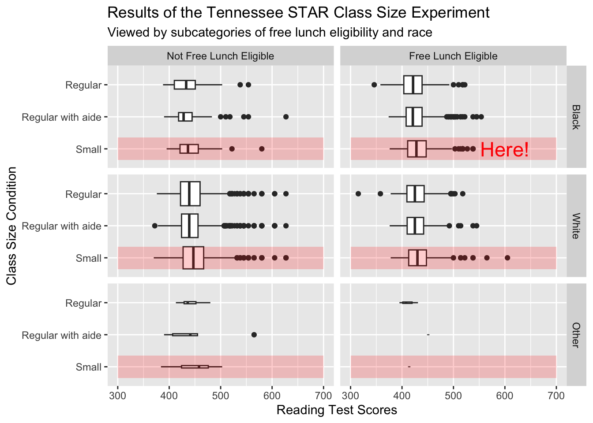
Voila!